# Check if libraries are installed; install if not.
if (!require("pacman")) install.packages("pacman")
pacman::p_load(here, dplyr, flextable, ggplot2, tidyr, moments, fBasics)4 Assignment 4
EVR-5086 Fall 2025
Assignment 4
To complete this assignment in R, I used the following packages:
- here: here() enables easy file referencing
- dplyr: functions for data manipulation
- tidyr: functions for reshaping data
- flextable: formatting tables
- ggplot2: for creating plots
- moments: functions for kurtosis and skewness
- fBasics: dagoTest() for the D’Agostino normality test
4.1 Exercise 1
To start, I read in MIA_J-D_T_Precip_inches.csv and assigned descriptive column names. Instead of computing the time series for one month at a time, I used dplyr::mutate() to divide each month’s column by the total column. This results in a data frame of the fraction of the annual total by year and month. For the remainder of the assignment, I focus on the month of April. Figure 4.1 shows the fraction of annual rainfall in April in Miami, Florida, from 1906 to 2022. Table 4.1 reports the descriptive statistics, rounded to four significant digits, for the fraction of annual rainfall occurring in the month of April.
# Read in and subset MIA_J-D_T_Precip_inches.csv
mia_rain <- read.csv(here("assignment4", "data", "MIA_J-D_T_Precip_inches.csv"),
header = FALSE)
# Add descriptive column names
names(mia_rain) <- c("year", "jan", "feb", "mar", "apr", "may", "jun",
"jul", "aug", "sep", "oct", "nov", "dec", "total")
# Compute monthly fraction by dividing all months by the total
mia_rain_fraction <- mia_rain %>%
mutate(across(-c("year", "total"), ~ round(. / total, 4)))#Plot the time series for April's fraction of the annual total for each year
ggplot(mia_rain_fraction, aes(x = year, y = apr)) +
geom_line() +
labs(
title = "Fraction of annual rainfall during April for Miami, Florida",
subtitle = "Comparison between 1906 and 2022",
x = "Year",
y = "Fraction of annual rainfall during April"
)
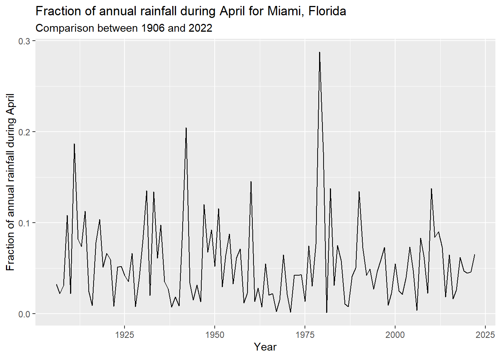
4.2 Exercise 2
Next, ahead of reshaping the data, I created factor levels to be able to rearrange the data by month of the year and computed the number of unique years in the data. In preparing the data for analysis, I reformatted the data, assigned factor levels, computed the log10-transformed data. In using pipes to reshape and add variables to the data, I reduced the number of intermediate objects created. Similarly with group_by() and summarize(), I was able to calculate various summary statistics at the same time for both the fraction and the log10 fraction of Miami rainfall by month.
The comparison of the histograms and Q-Q plots in Figure 4.2 show that the log10 transformed data appears more normal than the original data, but still show departures from the Q-Q line.
# Prep month levels for efficient ordering
month_levels <- c("jan", "feb", "mar", "apr", "may", "jun",
"jul", "aug", "sep", "oct", "nov", "dec")
# Calculate n
n_years <- n_distinct(mia_rain_fraction, "year")
# Prep data for upcoming analyses
mia_rain_fraction_tidy <- mia_rain_fraction |>
# Remove total
select(-total) |>
# Reformat to tidy format (long)
pivot_longer(
cols = !year,
names_to = "month",
values_to = "fraction"
) |>
# Log transform monthly fractions and define month factor levels
mutate(
month = factor(month, levels = month_levels, ordered = TRUE),
log10_fraction = log10(fraction)
) |>
# Reformat to tidy format (long)
pivot_longer(
cols = !c(year, month),
names_to = "stat",
values_to = "values"
) |>
# Sort by stat and year
arrange(stat, year, month)
# Compute descriptive statistics for mia_rain_fraction
mia_rain_fraction_summary <- mia_rain_fraction_tidy |>
# Run calculation on unique combinations of year and stat
group_by(month, stat) |>
# Calculate summary stats
summarise(min = round(min(values), 4),
q1 = round(quantile(values, 0.25), 4),
median = round(median(values), 4),
mean = round(mean(values), 4),
q3 = round(quantile(values, 0.75), 4),
max = round(max(values), 4),
variance = round(var(values), 4),
sd = round(sd(values), 4),
sk = round(skewness(values), 4),
ku = round(kurtosis(values), 4),
.groups = "drop") |>
# Sort data by stat and month
arrange(stat, month)# Rearrange the summary statistics to print nicely for just April
apr_summary <- mia_rain_fraction_summary |>
# Pivot the data so that the summary statistics have a long format
pivot_longer(-c(month, stat), names_to = "metric", values_to = "value")|>
# Pull out the stat into respective columns
pivot_wider(names_from = stat, values_from = value) |>
# Filter to just April
filter(month == "apr") |>
# Remove the month column
select(-month) |>
# Print reformatted and filtered data as a flextable
flextable() |>
# Include a blank first column header
set_header_labels(metric = "") |>
# Use simple format and autofit
theme_booktabs() |>
fontsize(size = 9, part = "all") |>
autofit()# Print summary table
apr_summaryfraction | log10_fraction | |
|---|---|---|
min | 0.0010 | -3.0000 |
q1 | 0.0224 | -1.6498 |
median | 0.0470 | -1.3279 |
mean | 0.0560 | -1.4140 |
q3 | 0.0735 | -1.1337 |
max | 0.2876 | -0.5412 |
variance | 0.0021 | 0.1850 |
sd | 0.0463 | 0.4301 |
sk | 1.8372 | -1.0215 |
ku | 5.0577 | 1.6156 |
# Create histogram
mia_rain_fraction_tidy |>
filter(month == "apr", stat == "fraction") |>
ggplot(aes(x = values)) +
geom_histogram(bins = 30) +
xlab("Fraction of annual rainfall in April") +
ylab(paste0("Frequency (n = ", n_years, ")"))
# Create Q-Q plot
mia_rain_fraction_tidy |>
filter(month == "apr", stat == "fraction") |>
ggplot(aes(sample = values)) +
stat_qq() +
stat_qq_line() +
xlab("Theoretical Quantiles") +
ylab("Standardized residuals")
# Create histogram for log10 tranformed data
mia_rain_fraction_tidy |>
filter(month == "apr", stat == "log10_fraction") |>
ggplot(aes(x = values)) +
geom_histogram(bins = 30) +
xlab("Log10 transformed fraction of annual rainfall in April") +
ylab(paste0("Frequency (n = ", n_years, ")"))
# Create Q-Q plot for log10 transformed data
mia_rain_fraction_tidy |>
filter(month == "apr", stat == "log10_fraction") |>
ggplot(aes(sample = values)) +
stat_qq() +
stat_qq_line() +
xlab("Theoretical Quantiles") +
ylab("Standardized residuals")
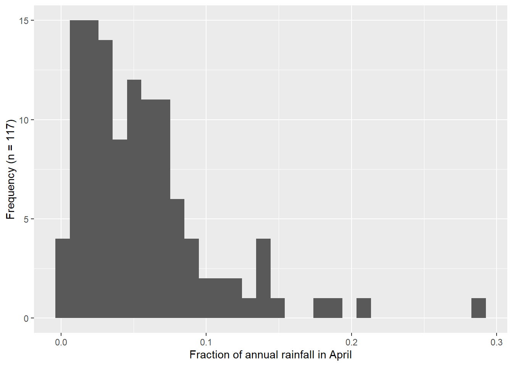
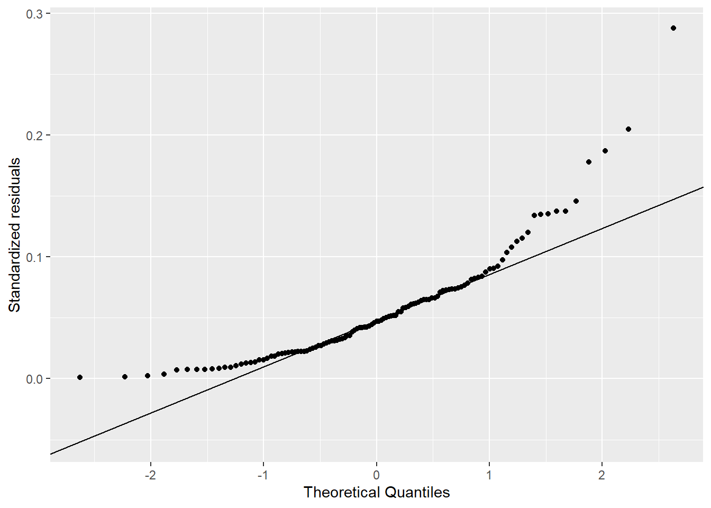
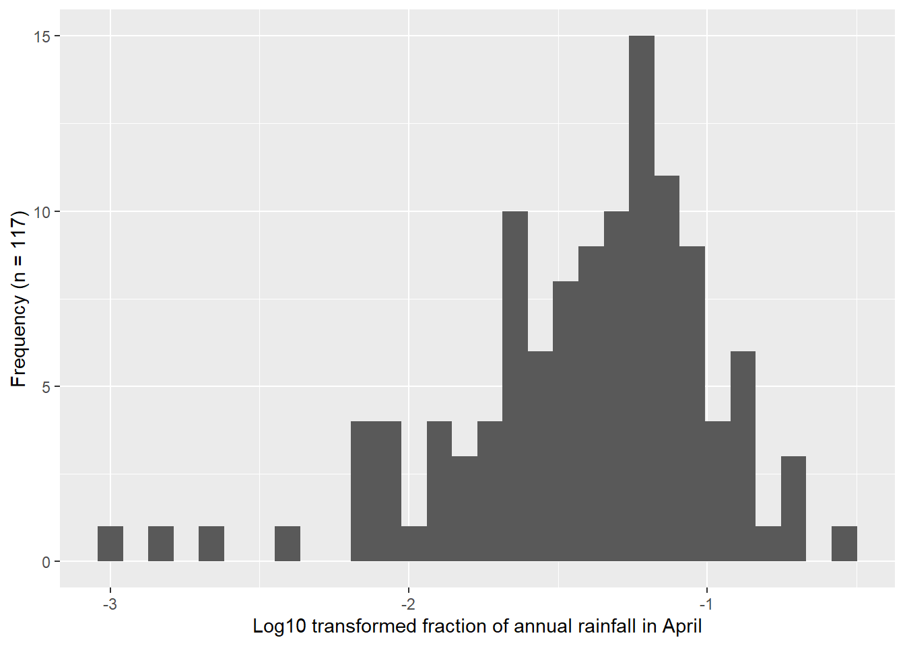
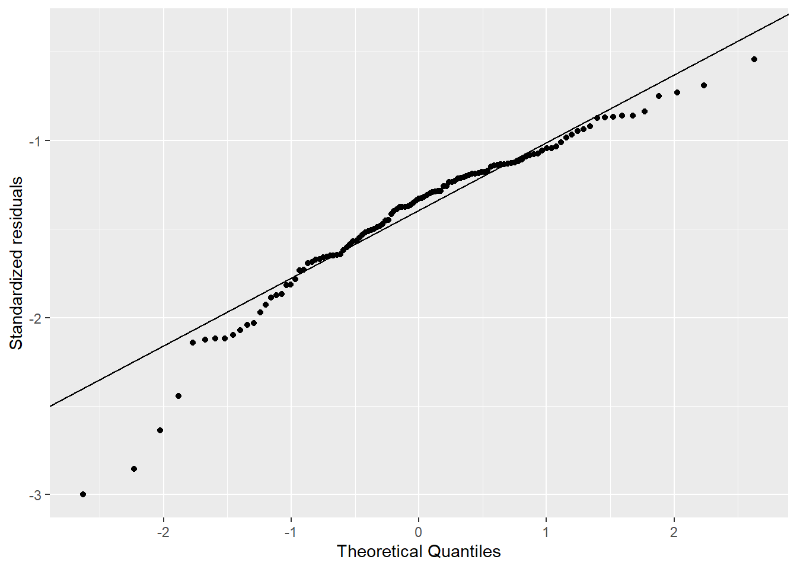
4.3 Exercise 3
I used the descriptive statistics from the previous exercise to generate samples from a known normal distribution. I compared 1,000 versus 21 samples. Figure 4.3 shows how the Q-Q Q-Q plot improves with more samples. Meanwhile, in Figure 4.4 we can see how much worse the Q-Q plot looks with fewer samples!
# Generate realizations of 1000 samples from known normal distribution
apr_rain_fraction_sample_1000 <- round(
rnorm(n = 1000,
mean = mia_rain_fraction_summary |>
filter(stat == "fraction",
month == "apr") |> pull(mean),
sd = mia_rain_fraction_summary$sd[1]), 4
)
# Generate realization of 21 samples from known normal distribution
apr_rain_fraction_sample_21 <- round(
rnorm(n = 21,
mean = mia_rain_fraction_summary |>
filter(stat == "fraction",
month == "apr") |> pull(mean),
sd = mia_rain_fraction_summary$sd[1]), 4
)
# Generate realization of 1000 samples from known normal log10 distribution
apr_rain_fraction_log10_sample_1000 <- round(
rnorm(n = 1000,
mean = mia_rain_fraction_summary |>
filter(stat == "log10_fraction",
month == "apr") |> pull(mean),
sd = mia_rain_fraction_summary$sd[1]), 4
)
# Generate realization of 21 samples from known normal log10 distribution
apr_rain_fraction_log10_sample_21 <- round(
rnorm(n = 21,
mean = mia_rain_fraction_summary |>
filter(stat == "log10_fraction",
month == "apr") |> pull(mean),
sd = mia_rain_fraction_summary$sd[1]), 4
)# Create histogram with 1000 samples
ggplot() +
aes(x = apr_rain_fraction_sample_1000) +
geom_histogram(bins = 30) +
xlab("Realized samples of the fraction of annual rainfall in April") +
ylab("Frequency (n = 1,000)")
# Create Q-Q plot with 1000 samples
ggplot() +
aes(sample = apr_rain_fraction_sample_1000) +
stat_qq() +
stat_qq_line() +
xlab("Theoretical Quantiles") +
ylab("Standardized residuals")
# Create histogram with 1000 log10 samples
ggplot() +
aes(x = apr_rain_fraction_log10_sample_1000) +
geom_histogram(bins = 30) +
xlab("Realized samples of the log10 fraction of annual rainfall in April") +
ylab("Frequency (n = 1000)")
# Create Q-Q plot with 1000 log10 samples
ggplot() +
aes(sample = apr_rain_fraction_log10_sample_1000) +
stat_qq() +
stat_qq_line() +
xlab("Theoretical Quantiles") +
ylab("Standardized residuals")
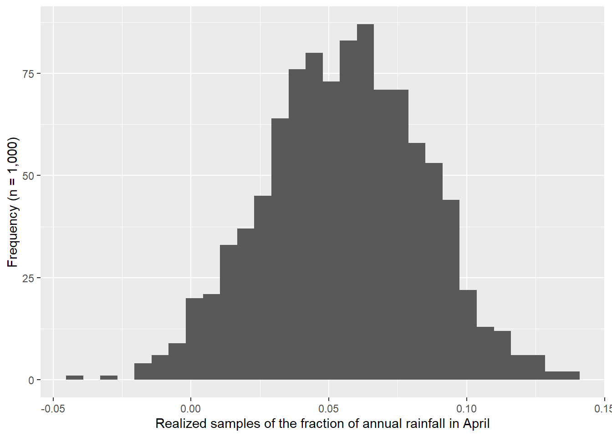
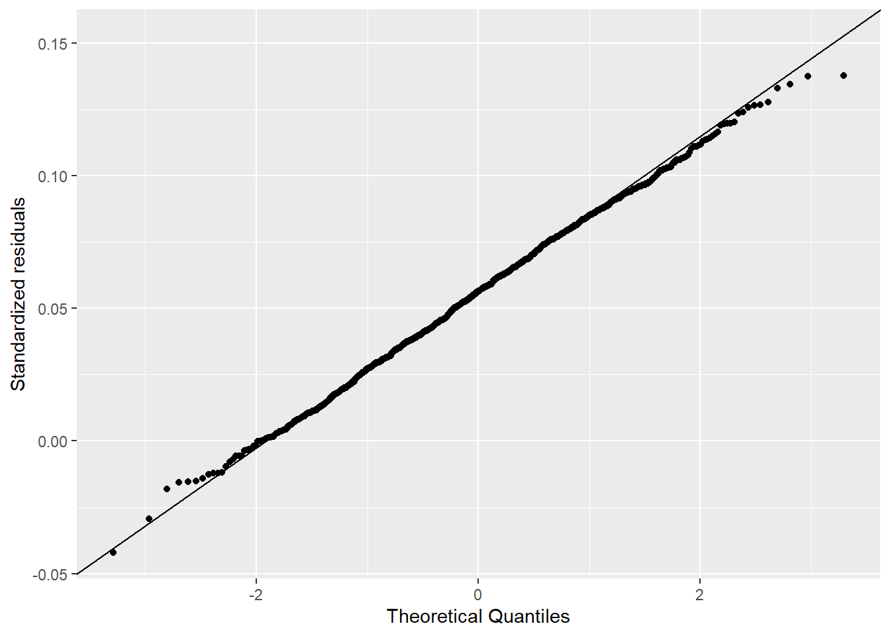
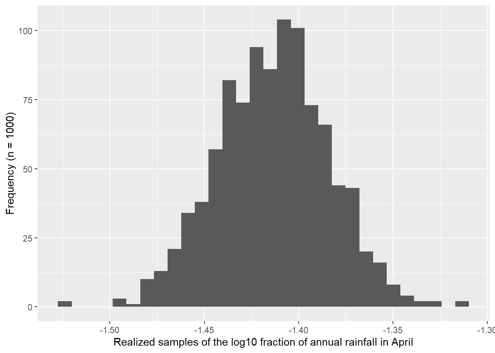
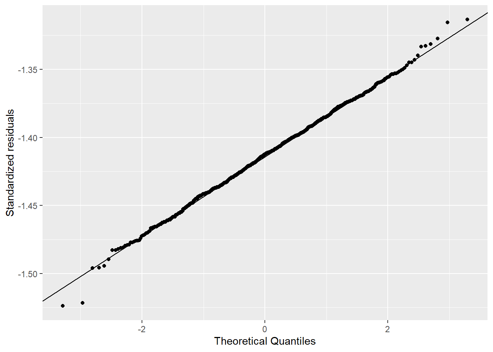
Here we plot samples from the known normal distribution with only 21 samples.
# Create histogram with 21 samples
ggplot() +
aes(x = apr_rain_fraction_sample_21) +
geom_histogram(bins = 30) +
xlab("Realized samples of the fraction of annual rainfall in April") +
ylab("Frequency (n = 21)")
# Create Q-Q plot with 21 samples
ggplot() +
aes(sample = apr_rain_fraction_sample_21) +
stat_qq() +
stat_qq_line() +
xlab("Theoretical Quantiles") +
ylab("Standardized residuals")
# Create histogram with 21 log10 samples
ggplot() +
aes(x = apr_rain_fraction_log10_sample_21) +
geom_histogram(bins = 30) +
xlab("Realized samples of the log10 fraction of annual rainfall in April") +
ylab("Frequency (n = 21)")
# Create Q-Q plot with 21 log10 samples
ggplot() +
aes(sample = apr_rain_fraction_log10_sample_21) +
stat_qq() +
stat_qq_line() +
xlab("Theoretical Quantiles") +
ylab("Standardized residuals")
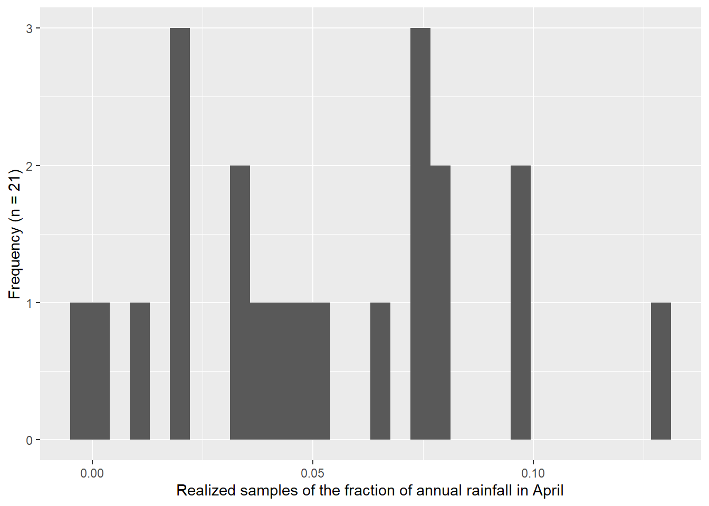
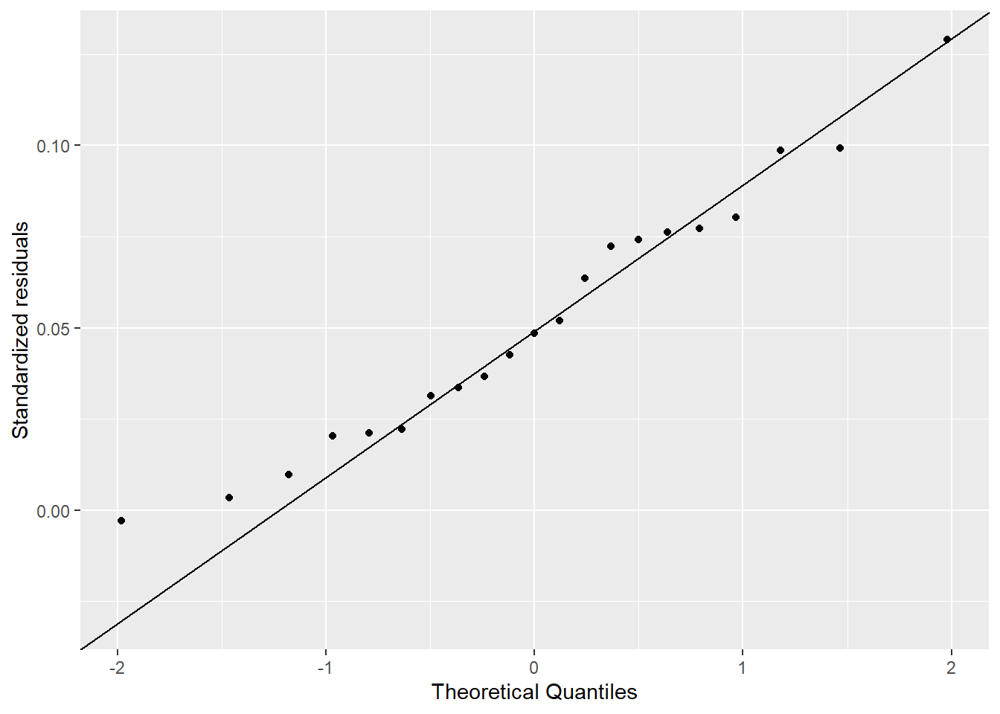
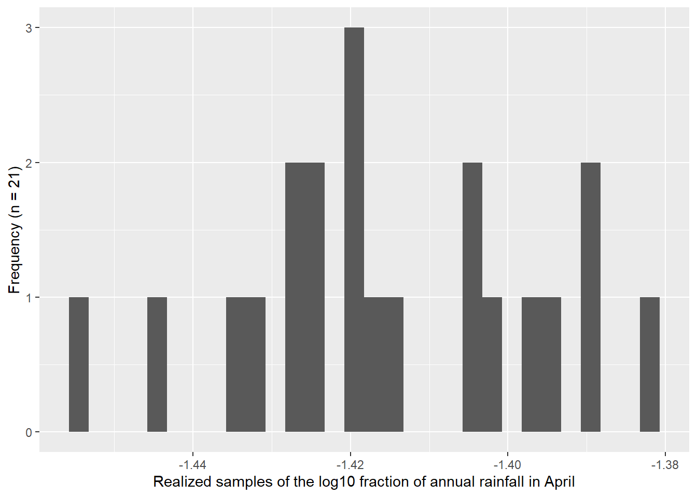
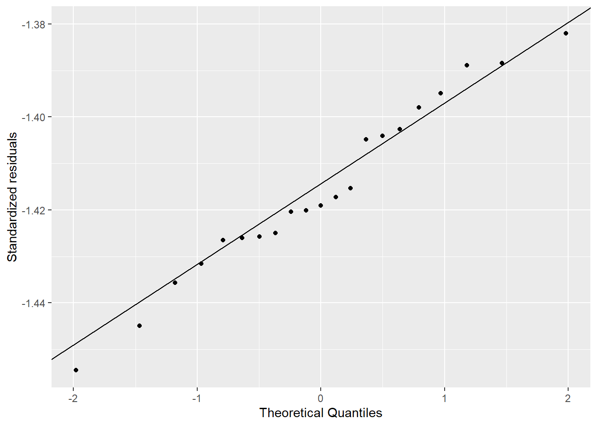
4.4 Exercise 4
I used dagoTest() to run the D’Agostino normality test on:
- the fraction of annual rainfall for April
- the log10 transformed fraction of annual rainfall for April
- 1,000 realized samples from a normal distribution
- 1,000 realized samples from a log10 transformed normal distribution
- the waiting time between Old Faithful’s eruptions
- the log10 transformed waiting time between Old Faithful’s eruptions
In Figure 4.5, I include histograms and Q-Q plots for the waiting time between Old Faithful’s eruptions. Table 4.2 provides key values for the normality tests listed above. In reading more about the test, I was reminded that the null hypothesis of the data being drawn from a normally distributed population is rejected when the p-value is less than the significance level (0.05). Following this decision rule, all of the tests listed above were rejected, except the samples that were realized from a normal distribution (numbers 3 and 4 above). This result aligns with the Q-Q plots shown previously, where all of them show departures from the expected theoretical quantiles, except the 1,000 realized samples that generated using a normal distribution (Figure 4.3).
# Calculate sample size
n_eruptions <- length(faithful$waiting)
# Create histogram
faithful |>
ggplot(aes(x = waiting)) +
geom_histogram(bins = 30) +
xlab("Waiting time between Old Faithful's eruptions") +
ylab(paste0("Frequency (n = ", n_eruptions, ")"))
# Create Q-Q plot
faithful |>
ggplot(aes(sample = waiting)) +
stat_qq() +
stat_qq_line() +
xlab("Theoretical Quantiles") +
ylab("Standardized residuals")
# Create histogram for log10 transformed data
faithful |>
ggplot(aes(x = log10(waiting))) +
geom_histogram(bins = 30) +
xlab("Log10 transformed waiting time between Old Faithful's eruptions") +
ylab(paste0("Frequency (n = ", n_eruptions, ")"))
# Create Q-Q plot for log10 transformed data
faithful |>
ggplot(aes(sample = log10(waiting))) +
stat_qq() +
stat_qq_line() +
xlab("Theoretical Quantiles") +
ylab("Standardized residuals")
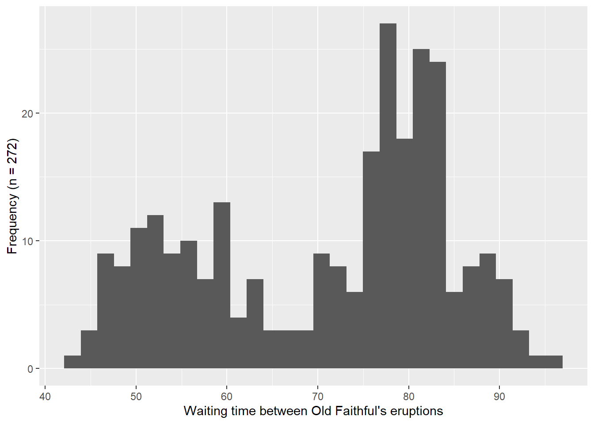
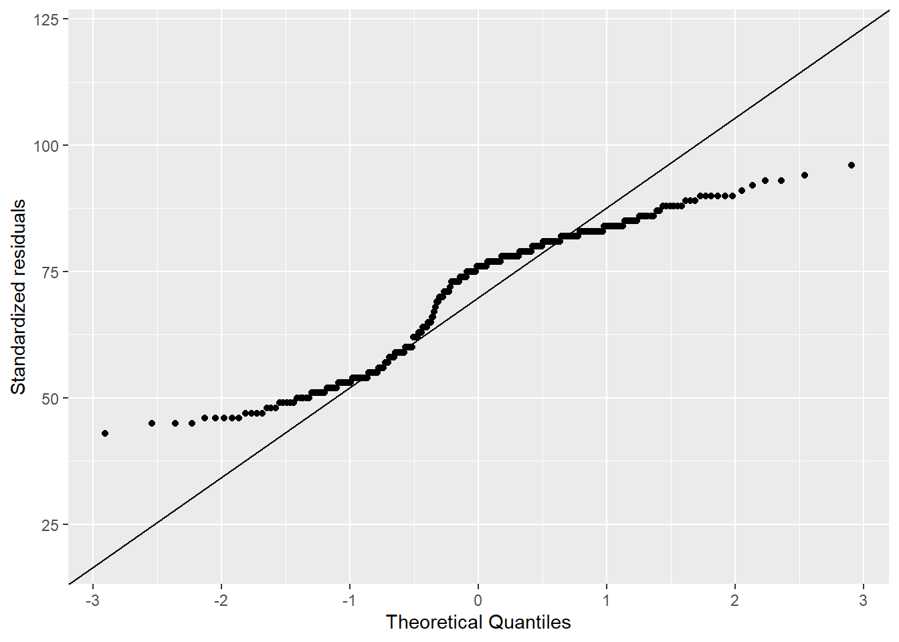
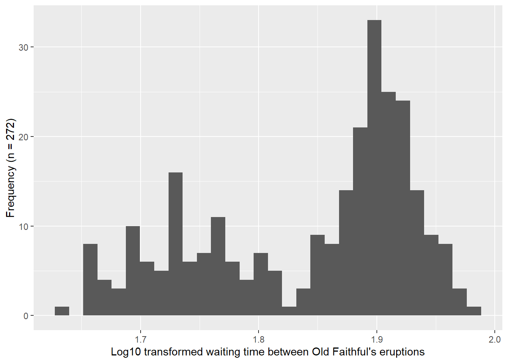
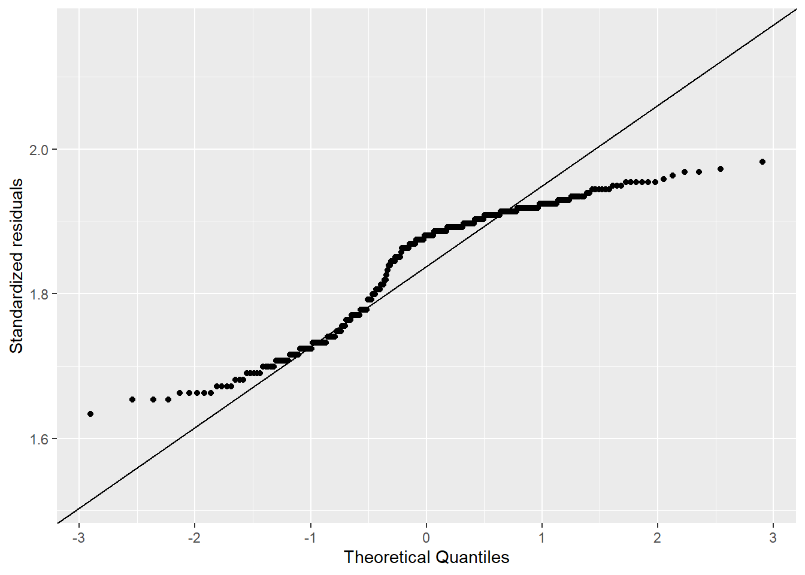
# Normal tests on rainfall data, sample realization, and Old Faithful
dago_mia_rain <- dagoTest(mia_rain_fraction$apr)
dago_mia_rain_log10 <- dagoTest(log10(mia_rain_fraction$apr))
dago_mia_rain_sample_1000 <- dagoTest(apr_rain_fraction_sample_1000)
dago_mia_rain_log10_sample_1000 <- dagoTest(apr_rain_fraction_log10_sample_1000)
dago_faithful <- dagoTest(faithful$waiting)
dago_faithful_log10 <- dagoTest(log10(faithful$waiting))# Collect results in a tibble for table output
dagoTest_results <- tibble(
test = c(
"April fraction",
"April log10(fraction)",
"April Normal sample (n = 1000)",
"April log10 Normal sample (n = 1000)",
"Old Faithful waiting",
"log10(Old Faithful waiting)"
),
chi_square = c(
round(dago_mia_rain@test$statistic[1], 4),
round(dago_mia_rain_log10@test$statistic[1], 4),
round(dago_mia_rain_sample_1000@test$statistic[1], 4),
round(dago_mia_rain_log10_sample_1000@test$statistic[1], 4),
round(dago_faithful@test$statistic[1], 4),
round(dago_faithful_log10@test$statistic[1], 4)
),
p_value = c(
round(dago_mia_rain@test$p.value[1], 4),
round(dago_mia_rain_log10@test$p.value[1], 4),
round(dago_mia_rain_sample_1000@test$p.value[1], 4),
round(dago_mia_rain_log10_sample_1000@test$p.value[1], 4),
round(dago_faithful@test$p.value[1], 4),
round(dago_faithful_log10@test$p.value[1], 4)
)
)# Flextable
flextable(dagoTest_results) |>
set_header_labels(test = "", chi_square = "χ²", p_value = "p-value") |>
colformat_num(j = c("chi_square", "p_value"), digits = 4) |>
theme_booktabs() |>
fontsize(size = 9, part = "all") |>
autofit()χ² | p-value | |
|---|---|---|
April fraction | 59.3249 | 0.0000 |
April log10(fraction) | 24.3791 | 0.0000 |
April Normal sample (n = 1000) | 1.7736 | 0.4120 |
April log10 Normal sample (n = 1000) | 1.9911 | 0.3695 |
Old Faithful waiting | 109.2417 | 0.0000 |
log10(Old Faithful waiting) | 55.5880 | 0.0000 |
4.5 Exercise 5
I also computed the ranks and return periods for April rainfall. When preparing the data for the plot, I noticed that it was necessary for the ranking to have a negative sign to generate a descending ranking. Lastly, in my first attempt of the plot with the logarithmic x-axis ticks, I realized I was accidentally doing log10 twice. When I use scale_x_log10 to adjust the x-axis scale, I noticed I need to read in the non-transformed data. That way the axis values in Figure 4.6 reflect the actual return periods in years, but the spacing is logarithmic.
# Rank April rainfall and compute return period
apr_rank <- mia_rain |>
select(apr) |>
# sort largest to smallest
arrange(desc(apr)) |>
# Create rank and compute return period
mutate(
rank = row_number(),
recurrence = (n_years + 1) / rank,
log10_recurrence = log10(recurrence)
)
# Plot ranked rainfall amounts as a function of the log10 of the return period
ggplot(apr_rank, aes(x = recurrence, y = apr)) +
geom_point() +
scale_x_log10(
breaks = c(1, 10, 100),
labels = c("1", "10", "100")
) +
labs(x = "Return period (years, log scale)", y = "Ranked April rainfall (inches)")
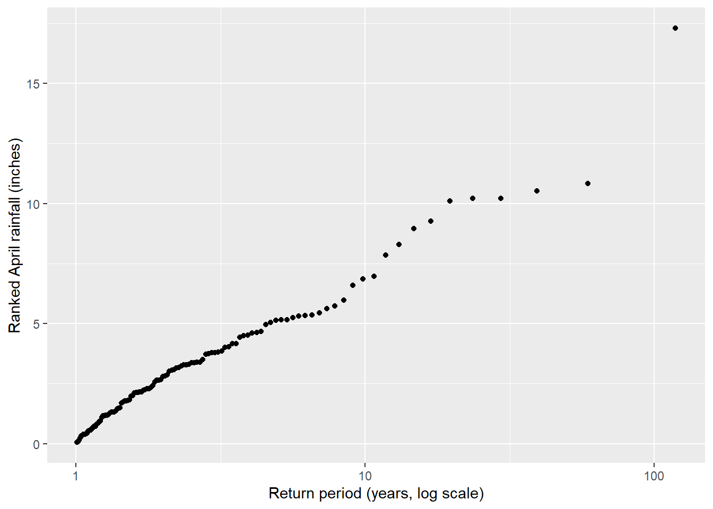